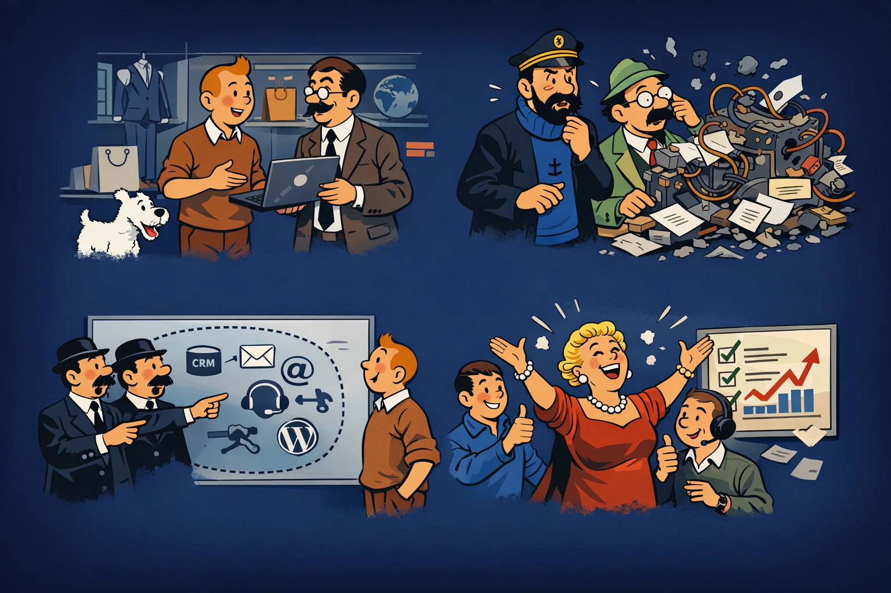

Leadhantering, AI och lokal integrationsstack
Lektion 1 bygger förståelse för problemdomän och arkitektur. Lektion 2 tar vid med felsökning, runtime och labb. Den nya miljöguiden hjälper er att starta samma Docker-miljö lokalt på macOS och Windows.
Docker Compose - kom igång lokalt på macOS och Windows
Guide till lokal setup, vilka tjänster som startar, portar, interna tjänstenamn, secrets och varför samma Docker-kontrakt gör deploy enklare.
Lektion 1 - Problemdomän, modellering och stack
Bosses Akvariefiskar som case, historik, UML, agilt arbetssätt, vendor lock-in, open source, Docker och vår lokala leadstack.
Föreläsning 2Lektion 2 - Felsökning, runtime och mini-labb
Statuskoder, n8n executions, miljövariabler, Flowise, Twenty, Chatwoot och strukturerad felsökning i Bosses-caset.